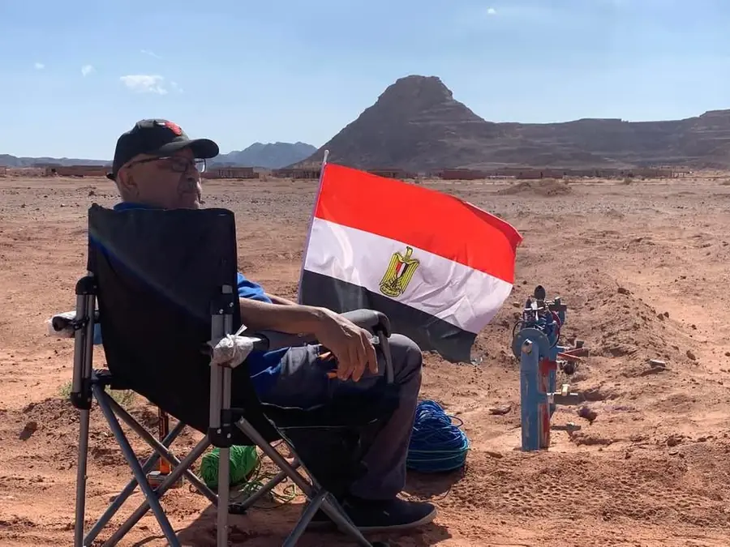
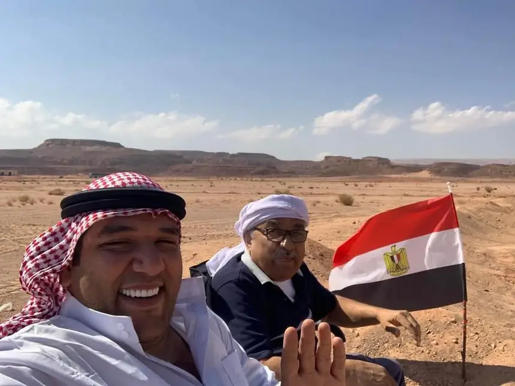
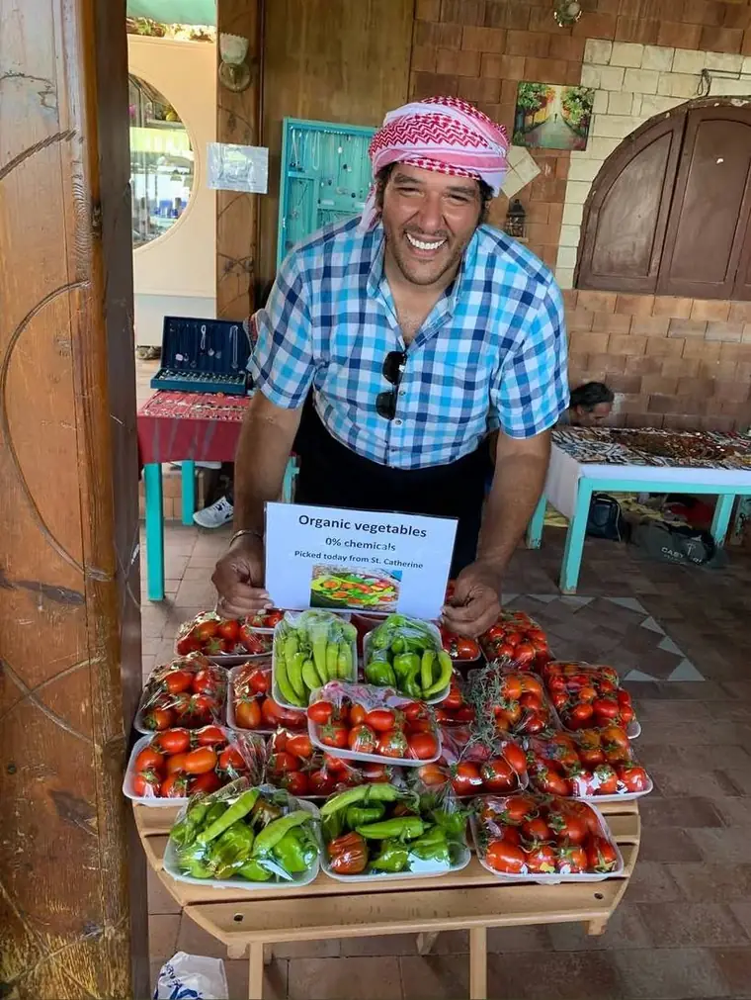

Why they call him the Godfather
لماذا يسمّونه الجودفاذر
Wadi Sa'al is now a recognised farming settlement in the Saint Catherine mountains. It did not start that way.
وادي سعال اليوم تجمّع زراعي معروف في جبال سانت كاترين. لم يبدأ هكذا.

When Mr. Rezk started here, there was no model to copy. Farming this high in Sinai means short water, hard winters and ground that gives up nothing without years of work put into it first. He did that work, and then he shared what it taught him.
That is the part his neighbours remember. Advice given, seedlings passed on, a hand with the irrigation when someone's line failed. The farms around him are part of what he built, even the ones that were never his.
Today his son Alaa takes the morning's picking down to Saint Catherine and sells it under a sign that makes exactly one promise.
حين بدأ الأستاذ رزق هنا، لم يكن أمامه نموذج يحتذيه. الزراعة على هذا الارتفاع في سيناء تعني ماءً شحيحاً، وشتاءً قاسياً، وأرضاً لا تعطي شيئاً قبل سنوات من العمل فيها. قام بذلك العمل، ثم علّم غيره ما تعلّمه منه.
وهذا ما يذكره جيرانه: نصيحة تُعطى، وشتلات تُمرَّر، ويد تمتد حين يتعطل خط الري عند أحدهم. المزارع من حوله جزء مما بناه، حتى تلك التي لم تكن ملكه قط.
واليوم ينزل ابنه علاء بمحصول الصباح إلى سانت كاترين، ويبيعه تحت لافتة تقطع وعداً واحداً لا غير.

